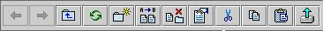

General Tool Bar for FsFileSync:

General Tool Bar can help to perform some basic operation in FSFileSync
Working with Documents and Folders:
Navigating through folders
Refreshing browser
Creating new folder
Renaming a Document/Folder
Deleting Documents/Folders
Viewing properties of Documents/Folders
Copying or moving Documents/Folders